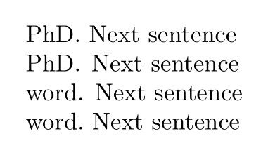

Contents
Punctuation rules
You must put
\setcharacterspacing [frenchpunctuation]
in your file.
\setcharacterspacing takes care about the space before/after quotation marks when you use manual quotes in a document.
It doesn't matter whether you use or don't use space between the quotations marks and the quoted text.
Some length
- Espace fine (thin space) : one point
useless unit: how about 0.1 * fontsize
- Espace avant-fine (eng ?) : one point and half (1pt ½)
useless unit: how about 0.1 * fontsize
- Moyenne (half) : quart de cadratin (quart of em) (¼ em) This is the size of the small non breakable space.
- Forte ou grosse : tiers de cadratin (word space) (1/3 em)
Space rules
- « ; », « ? », « ! » : get a thin non breakable space before if the sign before is a letter or a number ( id est « !!! » or « …! » and not « ! ! ! » or « … ! »). Justified space after. The small non breakable space can vary a little to adapt the justification.
- « : » : get a non breakable space before. Smaller than a normal space, bigger than a thin. x : y where 1pt < x < y and y = justified space
- « : » are never stuck to another sign (« ! : » not « !: »).
- « . », « , » : nothing before (not like in english). Justified space after.
- « — » (em dash). When used for a parenthesis, I think we must ask people to put a « ~ » or an utf8 nbsp to notify them : « bar —~foo bar~— foo ». And the result is « bar x — y foo bar y′ — x′ foo ». Where x=y and x′=y′ . y and y′ are non breakable spaces.
- of course, in an enumeration, the space after « — » have a fix space.
- « * », « † », « ‡ », « ¹ », « ² », etc. : all notes get a — really — thin non breakable space before (sometime nothing), are before the punctuation, follow with the space depending of the punctuation.
- if the note is a letter, between parenthesis, they must be in italic.
- the inner space of quotation — “«” and “»” — use thin non breakable spaces. « x foo x ». x = small non breakable space.
Other rules
- first level quotation sign are “«” and “»”, second level are « “ » and « ” ».
- the sign for hyphenate and composed words is « - » the dash, not an « – » (endash). Can be set with :
\setuphyphenmark[sign=normal]
And entering composed words like this : « composed||word »
Sorry for my bad english… « translation » welcome !
Spacing
(old content? 2013,2020)
In English, the space after some punctuation (most notably after period) is wider than a usual one; this is a standard behaviour of ConTeXt when typesetting in English. If you want to disable it, \frenchspacing is the command in TeX (that also works in ConTeXt).
In ConTeXt, you may also setup the language instead:
\setuplanguage[en][spacing=packed]
Here is a nice tweak:
\enabledirectives[characters.spaceafteruppercase=normal] \vbox{\hsize 5em x. X\par x.\ X\par X. X\par X.\ X\par}
By default space after uppercase followed by punctuation is set to traditional which enables a somewhat special hard coded hack in the tex engine where characters with sfcodes 999 nil a following spacecode setting, even when it's triggered by a \ .
Mixing broad and packed spaces
When current language is set to English, the default is to have broad spaces after punctuation marks.
But after an uppercase letter, ConTeXt applies a packed space. Using \null before the punctuation mark, gives a broad space.
If you need a packed space after a punctuation mark use \fsp[1] or simply use \ (backslash and space) after the punctuation mark.
This sample shows the commands in use:[2]
-
\startTEXpage[offset=1em, foregroundstyle={\tfd}] PhD. Next sentence PhD\null. Next sentence word. Next sentence word.\ Next sentence \stopTEXpage
- 